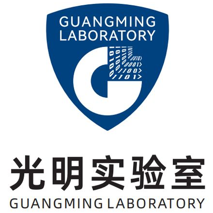
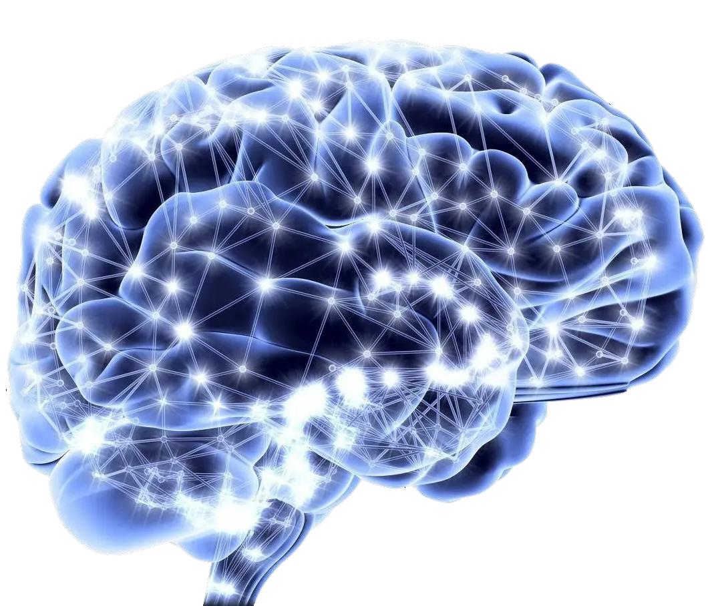
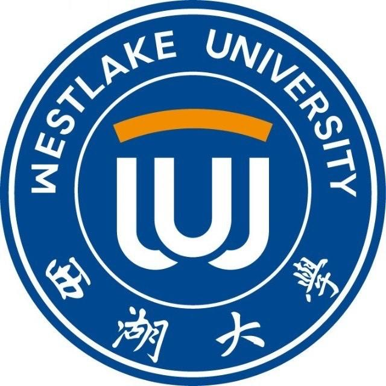

- Developed a method for building clinical reasoning benchmarks from patient records, assessing when to act, what action to take, and what consequences to expect.
- Extracted key decision points across a patient's course of care and examined subsequent changes for evidence of treatment effects, distinguishing causal relationships from events that simply occurred after treatment.
- Designed evaluations that follow the full clinical timeline to assess how models use earlier patient information to make later decisions and predict treatment outcomes.
- Collaborated with clinicians to develop a review framework for benchmark design and causal annotations, supporting data preparation for future medical world models program.
🎓 Education
University of Georgia (UGA)
Ph.D. Student in Computer Science (School of Computing)
01/2026 (Deferred from 08/2025) - 06/2030
Supervisor: Prof. Tianming Liu
GPA: 4.0/4.0
Harvard University
Visiting Ph.D. Student (Harvard Medical School and Massachusetts General Hospital)
05/2026 - 06/2027
Supervisor: Prof. Xiang Li
Research Area: AI/LLM for Healthcare.
Shanghai University (SHU)
B.E. in Artificial Intelligence (School of Computer Engineering and Science)
09/2021 - 06/2025
GPA: 3.81/4.0 (93.60/100)
Ranking: 1/52 (1/31 in class)
🔬 Research/Work Experience
 Research Intern at Harvard Medical School and Massachusetts General Hospital
Research Intern at Harvard Medical School and Massachusetts General Hospital
Long-Horizon Clinical and Causal Reasoning in Large Language Models
Lab: CAMCA Laboratory
Advisor: Prof. Xiang Li
05/2026 - 06/2027
 Machine Learning Engineer at EZCollegeApp (GyriQAI)
Machine Learning Engineer at EZCollegeApp (GyriQAI)
GyriQAI, Inc. · Startup of AI for education and college applications
03/2026 - now
- Developed agent-assisted workflows for school and counselor research, public-contact extraction, and education-news analysis.
- Built email outreach tooling for personalized messages, contact management, and delivery tracking.
- Collected and analyzed data to support product promotion and campaign planning.
- Managed the product's TikTok presence, including promotion, account maintenance, and audience and performance analysis.
- Teaching assistant for CSCI 4300: Web Programming and CSCI 4800/6800: Human-Computer Interaction.
- Developed grading rubrics, assessed coursework, and provided feedback in coordination with course instructors.
- Assisted with in-person classes and lab instruction, explained exercises to students, and evaluated classroom discussions.

Research Intern at Guangming Laboratory
(Guangdong Artificial Intelligence and Digital Economy Laboratory, Shenzhen)
Medical LLM Post-training
Advisor: Dr. Wenhao Jiang
Project Undisclosed
Related projects: MedQA Evaluation · PubMedQA Evaluation
09/2025 - 01/2026
- Cleaned and structured private clinical records into medical instruction-tuning data with diverse question-answer templates.
- Developed an automated Supervised Fine-Tuning (SFT) pipeline covering data loading, prompt construction, and model training.
- Generated answer-conditioned Chain-of-Thought traces and incorporated them into supervised training for medical reasoning.
- Applied reinforcement learning for subsequent policy optimization in clinical decision-making.
AI Intern (NLP Focus) at Huawei
Location: Huawei Lianqiu Lake R&D Center, Shanghai
Department: Ascend Computing Inference Development
12/2024 - 03/2025
- Contributed to the vLLM open-source community by identifying a bug (Issue #11978) and submitting a fix that was merged into the main branch (PR #11979).
- Worked on porting vLLM inference to Ascend NPUs through vllm-ascend, including operator adaptation and speculative decoding support.
- Validated operator behavior through unit tests and investigated inference issues during the migration to Ascend hardware.

SHU Brain-like Computing CenterAI for Recognizing Preference
Advisor: Prof. Huiran Zhang (Shanghai University)
Project Undisclosed
04/2024 - 09/2024
- Investigated how the N1 and LPP components of event-related potentials (ERPs) reflect early attention and later emotional evaluation during preference judgments.
- Proposed a quantitative model combining ERP signals across brain regions to represent the direction and intensity of human preferences, examining responses across like, neutral, and dislike conditions.
- First-authored an arXiv preprint presenting the experimental findings and integrated model for EEG-based preference analysis.

Research Intern at Westlake UniversityDiscovering Physical Equations from Video and High-Dimensional Data
Advisor: Prof. Tailin Wu (Westlake University), Prof. Sebastian Musslick (Brown University)
Project Undisclosed
07/2023 - 06/2024
- Designed a Transformer-based symbolic regression model and generated syntactically valid equations in prefix notation for training and controlled experiments.
- Created synthetic videos of objects moving according to known formulas against randomized backgrounds to study the recovery of motion from visual data.
- Built a multi-component autoencoder to represent motion with two latent scalars and appearance with a separate code; predicted subsequent motion states and decoded them to reconstruct the next frame.
- Combined the motion encoder and symbolic regressor to investigate equation discovery from video, with the mapping from learned latent variables to interpretable physical quantities and valid equations remaining an open challenge.
💻 Recent Projects
Railbound Benchmark: Visual Reasoning and Planning
Unreleased research project
10/2026 - Present
- Built a Railbound benchmark of track-laying puzzles involving limited resources, synchronized trains, arrival order, and interacting mechanisms to assess spatial understanding, constraint planning, temporal reasoning, and multi-turn correction.
- Constructed a deterministic simulation environment with board images, structured states, and reference solutions, judging proposed plans by their execution and providing feedback on constraint violations, collisions, and loops.
- Designed comparisons between images with rules, images without rules, and text grids with rules to examine the roles of visual perception, mechanism understanding, and planning.
- Evaluating multiple models through direct text or image reasoning without tool calls or code execution, assessing their spatial reasoning, rule understanding, and planning capabilities.
- Built and maintained the lab website with reusable page components and centrally managed content for members, research, publications, opportunities, and news.
- Built a platform to showcase and support entrepreneurship projects at UGA with support from the lab and advisor.
- Established a publishing AI Agent workflow for daily AI/SI reports and weekly research and industry analyses, with source links and reusable import specifications.
- Implemented searchable news archives and interactive weekly analyses with supporting evidence, confidence assessments, and counterarguments.
Medical Visual Question Answering with Multimodal Retrieval and Fine-Tuning
Undergraduate Thesis (Chinese)
05/2025
- Implemented joint image-text embeddings, label-guided retrieval, and paired image-text retrieval for medical visual question answering.
- Adapted Qwen2.5-VL through staged LoRA fine-tuning on medical text and image-text data.
- Compared the base model, retrieval-augmented model, and retrieval-plus-fine-tuning system on OmniMedVQA, and evaluated alternative retrieval strategies to examine their separate contributions.
- Proposed and implemented a method to quickly align pre-trained models from different modalities.
- Designed a Siamese neural network similarity module to align pretrained models with varying embedding dimensions.
- Achieved rapid model alignment between text and image modalities with minimal training on a standard image classification dataset, bypassing the need for large "image-description" datasets (e.g., CLIP).
- Experimentally demonstrated the project's ability to align quickly with minimal GPU requirements while maintaining satisfactory performance.
📚 Papers (First / Co-first Author)
* Equal contribution.
Imaging-Centered Artificial Intelligence for Precision Cancer Immunotherapy: Multimodal Biomarkers, Treatment-Effect Estimation, and Clinical Translation
Paper Link · Research Square Preprint (2026). DOI: 10.21203/rs.3.rs-10468208/v1. Under review at Meta-Radiology.
Overview: This review examines how imaging can connect changes in tumors with molecular and clinical data to inform cancer immunotherapy decisions. It evaluates the strength and treatment relevance of existing evidence, using radiotherapy plus immunotherapy to highlight a central gap: predicting outcomes under a given treatment does not establish whether a different treatment would benefit the patient.
ASTELD: A Six-Axis Classification Framework for Autonomous AI Agents - Design, Evaluation, and an OpenClaw Case Study
Paper Link · arXiv Preprint (2026). arXiv:2608.05201.
Overview: ASTELD organizes autonomous AI agents by architecture, security, tool integration, execution, human control, and deployment. Its comparison of eight platforms and the OpenClaw ecosystem maps common design patterns and security trade-offs, providing a consistent framework for understanding how agent systems differ beyond individual product features.
The Study of Human Preference Based on Integrated Analysis of N1 and LPP Components
Paper Link · arXiv Preprint (2025). arXiv:2505.19879.
Overview: EEG recordings from 14 participants viewing six categories of everyday objects are used to examine how early attention and later emotional evaluation relate to preference. Complementary N1 and LPP responses across like, neutral, and dislike conditions motivate a quantitative model that combines signals across brain regions to represent preference intensity and direction.
Research advanced in offline handwritten signature verification
Paper Link · Applied and Computational Engineering, 6(1), 1236-1244 (2023). DOI: 10.54254/2755-2721/6/20230653.
Overview: This review traces offline signature verification from image preprocessing and feature extraction to neural network classification. Reported results on CEDAR, GPDS300, and BHSig260 show uneven performance across datasets, while limited training samples and demanding reference-signature requirements highlight the gap between benchmark results and practical verification.
🏆 Awards
- ICPC (International Collegiate Programming Contest) Asia Regional Contest (Hefei) Bronze Medal 🥉11/2023
- ICPC (International Collegiate Programming Contest) Asia Regional Contest (Nanjing) Bronze Medal 🥉11/2022
- ASC Student Supercomputer Challenge National Second Prize 🥈02/2024
- Lanqiao Cup C/C++ Programming Contest (National) Third Prize 🥉06/2023
- Lanqiao Cup C/C++ Programming Contest (Shanghai Division) First Prize 🥇04/2023
- CCPC (China Collegiate Programming Contest) Shanghai Programming Contest Silver Medal 🥈10/2022
🛠️ Skills
- LLM/MLLM Post-training: Supervised fine-tuning, LoRA, reasoning-trace generation, medical model adaptation
- Evaluation & Multimodal Learning: Benchmark design, clinical reasoning, visual planning, multimodal retrieval, cross-modal alignment
- Frameworks & Inference: PyTorch, Hugging Face Transformers, vLLM, Ascend NPU adaptation
- Agents & Automation: LLM-assisted research, vibe-coding, Agent computer-use, content publishing workflows
- Engineering: Python, C++, JavaScript, HTML/CSS, Git/GitHub, Linux and RemoteSSH, LaTeX
📁 Earlier Projects/Researches
View earlier projects and research
- Reproduced and experimented with the TextCNN model.
- Performed tokenization and encoding of sentence content, followed by padding or truncating sentence lengths.
- Implemented word embedding and utilized multiple convolutional kernels of varying sizes for feature extraction, pooling, and final classification through fully connected layers.
Research at Shanghai University
Video Frame Interpolation with PVT
Advisor: Prof. Hang Yu (Shanghai University)
04/2023 - 06/2023
- Proposed a novel encoder-decoder video frame interpolation model leveraging PVT v2 as the encoder and a UNet-like decoder with deconvolution and residual concatenation.
- Achieved an SSIM of 0.9879 on the Vimeo90K Dataset, surpassing state-of-the-art methods.
- Developed a network model based on CNN for video frame feature extraction and LSTM for sequential frame feature computation.
- Compared the classification performance of KNN and ANN after freezing the feature extraction model parameters.
- Achieved 92% accuracy on a public dataset, comparable to results from another study using a non-public dataset.
- Independently designed and coded a system utilizing VGG16 for signature feature extraction.
- Achieved 100% accuracy on the CEDAR dataset using Siamese neural networks for classification.
- Developed frontend-backend interaction logic enabling the utilization of training results on web platforms.
🤝 Extracurricular & Volunteer Activities
- Coordinated student activities and maintained the lab's website and public communications.
- Managed lab social media, like Instagram, and prepared content about research, events, and opportunities.
- Organized and participated in campus events, delivered presentations, and introduced the lab's research and activities to the university community.
New Media Center, School of Computer Engineering and Science
Chairman
01/2022 - 01/2023
- Managed content publication on the School's official WeChat account and coordinated daily operations.
- Organized and managed recruitment presentations, student representative meetings, and other related affairs.
ByteDance
Campus Ambassador
03/2022 - 06/2022
- Assisted in promoting spring recruitment and summer internships.
- Distributed promotional materials and internal referral codes.
Volunteer Hours: 100h+ ⏳